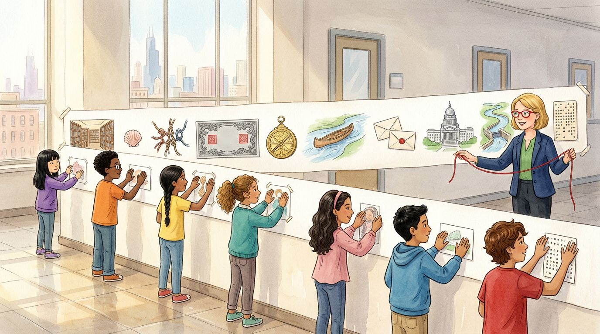

Grade 7 · Social studies · SS.6-8.H · CV · EC · G
The timeline across the hallway
A story about a timeline that stretches down the whole hallway, and the threads that connect a thousand years of history.
La línea del tiempo a lo largo del pasillo. Un cuento sobre una línea del tiempo que ocupa todo el pasillo y los hilos que unen mil años de historia.
Social studies words you will learn
Tap a green word to see what it means.
Toca una palabra verde para ver qué significa. Con la ayuda activada, verás también la definición en español.
The story
El cuento está en inglés. Pulsa «Listen to the story» para escucharlo y toca las palabras verdes cuando no entiendas una.
For the last project of the year, Ms. Novak taped a strip of paper all the way down the hallway. "This is a from the year 800 to 1906," she said. "Each of you will add the stories we studied. Then we'll look for the threads that connect them."
Daniel taped a drawing of a library near the start. "House of Wisdom, Baghdad, early 800s," he said. "Scholars translated books from Greece, Persia and India. Al-Khwarizmi wrote about algebra and the Indian numbers." Next to it, Israel taped a page of numbers. "Fibonacci, 1202. He brought those numbers to European merchants."
Ms. Novak tied a red yarn from Daniel's drawing to Israel's. "That's a ," she said. "The numbers traveled from India to Baghdad to Italy. Each step was an that changed how people calculated and traded."
Selena added a shell for the Maya zero, and Elías added a knotted khipu. "Two civilizations in the Americas that kept records with numbers, without our alphabet," said Elías. "And for both, most of the written records after the conquest came from the Spanish," said Selena. "Historians have to think about whose a shows."
Sophia taped a paper note with a dragon border, and Athena added an astrolabe and a basket of corn and potatoes. Salma drew a canoe for 1673. "The Illinois people showed Jolliet and Marquette the Chicago portage," she said. "Jolliet wrote that a canal could connect the lake to the Mississippi." She stretched a red yarn all the way to the end of the hallway, to a drawing of a river with a canal. "And in 1900, it happened."
"That's across more than 200 years," said Ms. Novak. "The portage led to the idea of a canal, the canal reversed the river, and that led Missouri to take Illinois to the Supreme Court." Daniel added a drawing of the Indiana statehouse. "And in 1897, the Indiana Senate stopped a bad law about pi."
Israel taped the last drawing, a card with holes, at 1890. "The Constitution required a census, and the census needed a new machine," he said. Ms. Novak stepped back to look at the whole hallway, crisscrossed with red yarn. "What's the biggest thread?" she asked. "Ideas travel," said Athena. "Through translators, merchants, letters, maps and machines. And they change people's lives."
Students from other classes stopped to read the timeline. A sixth grader pointed at the khipu. "What's that?" Elías smiled and began to explain. "It's a record made of string. Let me show you how to read it." Ms. Novak smiled too. "That," she said, "is how ideas travel."
Pause to connect
Visual arts · VA:Cn11.1.7
This year, you looked at a painting of a library in Baghdad, a page of Liber Abaci, the Dresden Codex, an Inca khipu, a Ming paper note, a mariner's astrolabe, Jolliet's map, a painting of a card game, the Pi Bill, photographs of the canal and Hollerith's machine.
Este año observaste la pintura de una biblioteca de Bagdad, una página del Liber Abaci, el Códice de Dresde, un quipu inca, un billete Ming, un astrolabio náutico, el mapa de Jolliet, la pintura de una partida de cartas, la ley de pi, las fotografías del canal y la máquina de Hollerith.
What to do: Choose your favorite of these works. Make a small museum label for it: what it is, when and where it was made, and why it matters for our timeline.
Qué hacer: Elige tu obra favorita de estas. Hazle una pequeña etiqueta de museo: qué es, cuándo y dónde se hizo, y por qué es importante para nuestra línea del tiempo.
- Which work did you choose, and what does it show about the people who made it?¿Qué obra elegiste y qué muestra sobre las personas que la hicieron?
- How is an object or a picture a different kind of source from a written text?¿En qué se diferencia un objeto o una imagen de un texto escrito como fuente?
Think about it, then answer in your notebook or talk it over with someone at home.
Check your thinking
Example label: Inca khipu, made between about 1400 and 1532 in the Andes. It recorded numbers with knots and helped run a huge empire without an alphabet. Objects and pictures show what people made, used and valued, even when they did not write about it; but they need careful interpretation, just like written texts.
Glossary
- timeline
- A line that shows events in the order they happened.
- línea del tiempo: Una línea que muestra los sucesos en el orden en que pasaron.
- cause and effect
- How one event (the cause) makes another event (the effect) happen.
- causa y efecto: Cómo un suceso (la causa) hace que ocurra otro suceso (el efecto).
- perspective
- A point of view: the way a person or group sees an event.
- perspectiva: Un punto de vista: la manera en que una persona o un grupo ve un suceso.
- innovation
- A new idea, method or invention that changes the way people do things.
- innovación: Una idea, un método o un invento nuevo que cambia la manera en que la gente hace las cosas.
- source
- Anything that gives information about the past, like a letter, a map, an object or a book.
- fuente: Cualquier cosa que da información sobre el pasado, como una carta, un mapa, un objeto o un libro.
- connection
- A link between people, places or ideas.
- conexión: Un vínculo entre personas, lugares o ideas.
Questions
Choose the correct answer. If you make a mistake, the story shows you where the answer is.
Elige la respuesta correcta. Si te equivocas, el cuento te muestra dónde está la respuesta.
-
Question A. What happened at the House of Wisdom in the early 800s?
¿Qué pasó en la Casa de la Sabiduría a principios del siglo IX?
Scholars translated books from Greece, Persia and India, and al-Khwarizmi wrote about algebra and the Indian numbers.
-
Question B. How did the numbers we use travel to Europe?
¿Cómo llegaron a Europa los números que usamos?
The numbers traveled from India to Baghdad to Italy, where Fibonacci taught them to merchants.
-
Question C. Why must historians think about perspective when they study the Maya and the Inca?
¿Por qué los historiadores deben pensar en la perspectiva al estudiar a los mayas y a los incas?
Most written records after the conquest came from the Spanish, so historians ask whose perspective a source shows.
-
Question D. What chain of cause and effect connects 1673 and 1906?
¿Qué cadena de causa y efecto une 1673 y 1906?
The portage led to the idea of a canal, the canal reversed the river, and that led Missouri to sue Illinois.
-
Question E. What did Athena say was the biggest thread of the year?
¿Cuál dijo Athena que era el hilo más importante del año?
Ideas travel through translators, merchants, letters, maps and machines, and they change people's lives.
Challenge: explain your thinking
Find the threads
Choose three stories from this year and connect them with one big idea, such as ideas travel, innovation changes daily life or perspectives shape history. Explain the connection with evidence from each story.
Encuentra los hilos. Elige tres cuentos de este año y únelos con una gran idea, como «las ideas viajan», «la innovación cambia la vida diaria» o «las perspectivas dan forma a la historia». Explica la conexión con evidencia de cada cuento.
Answer in your notebook or talk it over with a classmate. Use evidence from the story.
Responde en tu cuaderno o coméntalo con un compañero. Usa evidencia del cuento.
Check your thinking
Example: Innovation changes daily life. Paper money made trade easier in Song China; the astrolabe let sailors cross oceans, which began the Columbian Exchange; and Hollerith's punched cards counted the census in months instead of years. In each story, a new tool changed how people worked and lived, with both benefits and new problems.
Go further
Imagine a student in the year 2150 making a timeline of our time. Which event or invention from today would you want on it, and why?
Para ir más lejos. Imagina a un estudiante del año 2150 que hace una línea del tiempo de nuestra época. ¿Qué suceso o invento de hoy querrías que apareciera en ella y por qué?
Check your thinking
There is no single right answer. A strong answer names an event or invention, explains how it changes the way people live, work or communicate, and connects it to a thread from this year, for example that ideas travel faster than ever through the internet.